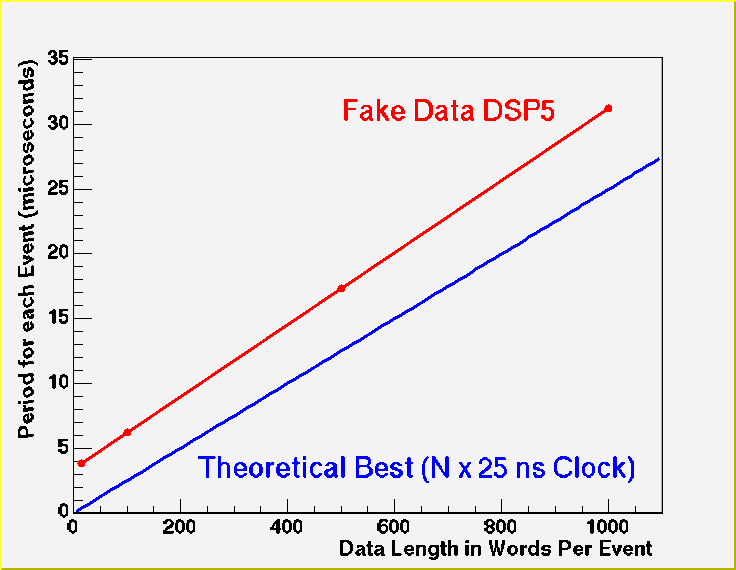
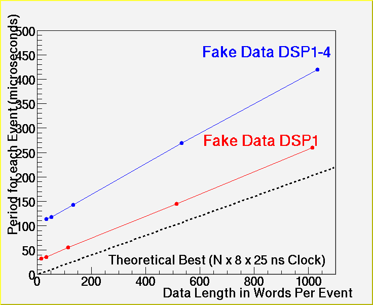

DCM Fake Data Guide
J.Nagle - updated 08/04/2003
For expert testing, there are two modes for running the DCM's with fake data.
As of today, fake data testing is not supported within RunControl. Note that a
RC download wipes out previous mode selections!
NOTE THAT CHANGES TO DCM AND DSP CODE NEED TO BE USED TO BE CONSISTENT WITH THESE RESULTS!
1) Fake data generated from DCM DSP5.
In this mode you can generate fake data of a programmable length and with a programmable
delay between events.
How to run (this example is for jseb readout)?
$ONLINE_MAIN/bin/process_pcf_file.sh -DFAKE5 -DPAR_JSEB foogranule.pcf
dcm foogranule
-> 301 (read config file)
-> 303 (initialize)
-> 98 (input fake frame size)
-> must be greater than 14 and less than 20000
-> if you set 90000+N, then dsp5 sends fake data of length
N, N-1, N-2, N-3, ..., 15, N, N-1, ...
-> 99 (input delay loop counter between events - not a time interval)
-> almost all tests should set this to zero
-> 305 (run)
Rate Results (checking output on front panel, no hold assert):
 <\img>
2) Fake data generated from DCM DSP1-4
In this mode, the default is to get a fake length from each DSP 1-4 that
is to be readout as the un-zerosuppressed length for that HITFORMAT.
One can override this by typing in a HITFORMAT = 50000 - N, then you
will get fake lengths = N + headers.
How to run (this example is for jseb readout)?
edit pcf file to have the HITFORMAT for the length you want...
$ONLINE_MAIN/bin/process_pcf_file.sh -DFAKE -DPAR_JSEB foogranule.pcf
dcm foogranule
-> 301 (read config file)
-> 303 (initialize)
-> 305 (run)
Rate Results (checking output on front panel, no hold assert):
 <\img>